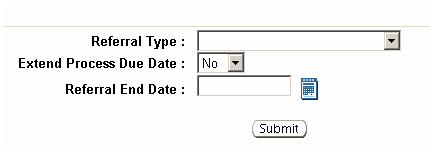

Previous Topic
Next Topic
| Workflow |
Previous Topic |
Next Topic |
The third-level menu, Referral, of the Task Profile page allows you to identify an entity who you have asked for
additional information from in order to continue processing the task. You can refer only tasks that are 'In process'. Referring
a task does not change the “In Process”
status of the task or the user to whom the task is assigned but the task will
disappear from the assigned user’s ToDo List until
the referral period ends. There is no limit to how many times you can
refer a task and a new referral may begin immediately after a referral has
ended. If you are concerned about forgetting about the task, you can
generate a substitute task for yourself by using the Create ToDo Task on the second level menu of the Home tab.
The following
selections are required in order to refer a task:

Otherwise, the
referral will end automatically on the Referral End Date.
Referring a task may extend the due date for the
workflow. For each Referral Type, they system will provide the default settings for
whether or not to extend the due date, and for how long, according to the
following table of information:
Copyright © 1996, 2004, Oracle. All rights reserved.